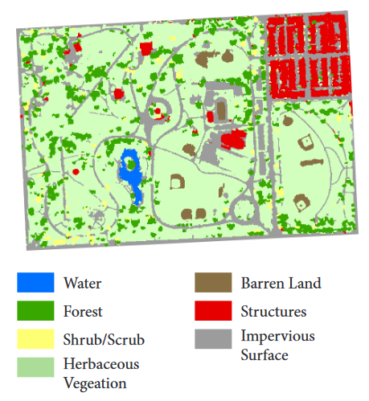
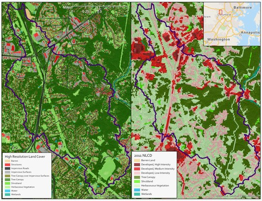
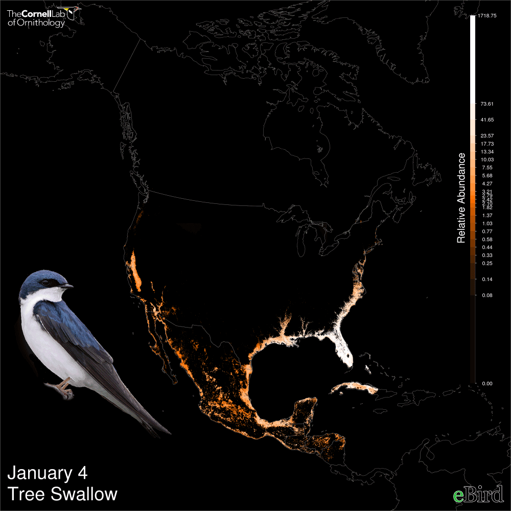

1 - La prédiction des catastrophes naturelles
2 - Protéger les espèces en danger
4 - Vers une modélisation à l'échelle planétaire
L’intelligence artificielle est un sujet qui intéresse de plus en plus de monde et qui offre de nombreuses perspectives. Mon objectif pour cette veille technologique a été de me renseigner sur les applications concrètes de l’intelligence artificielle dans un domaine particulier, celui de l’écologie. Cela fait quelques temps qu’il s’agit d’un sujet brûlant, omniprésent dans les médias. En 50 ans le niveau des océans s’est élevé de 10 centimètres, on observe des ouragans et cyclones plus violents et plus fréquents et on a des risques plus élevés de canicule et donc de feux de forêts.
Le but de cette page est donc de présenter les différentes innovations de l’intelligence artificielle au service de l’environnement.
Différents problèmes écologiques seront couverts, comme les catastrophes naturelles, la protection des espèces, la pollution de l’air et finalement un projet de modélisation de la planète.
Pour prévenir ces catastrophes il est important d’obtenir des données géographiques précises et en temps réel. Pour les inondations notamment, pour surveiller les risques on utilise des cartes comme ci-dessous, où les rivières, les forêts, les bâtiments, les champs et autres ont été identifiés.
A partir de ces données géographiques il est possible de faire des prévisions. Pour l’instant, sans intelligence artificielle le seul moyen est de faire le travail à la main en utilisant les images satellites. Mais Microsoft a développé un outil de mapping pour le faire automatiquement, en utilisant des algorithmes d’intelligence artificielle. Il est alors possible de reconnaître rapidement les différentes zones (forêts, bâtiments, rivières..etc), de manière bien plus précise :les images sont 1000 fois plus précises que celles utilisées avant. Ici deux cartes mises côte à côte pour comparer : à gauche une image obtenue avec l’intelligence artificielle et à droite une des cartes obtenues auparavant.
La technologie de Microsoft peut cartographier les Etats-Unis en un peu plus de 10 minutes. C’est rapide, ce qui est un facteur important pour la prédiction des inondations et des catastrophes naturelles de manière générale. Plus on a des données exploitables rapidement et plus on peut être efficace.
Une application concrète de ces cartes est Urban Forest Administration in Washigton DC qui utilise ces images pour décider où planter des arbres. En effet les arbres dans les zones avec beaucoup d’eaux stagnantes peuvent limiter les risques d’inondation.
Ce type de méthode (utiliser l’intelligence artificielle pour identifier et cartographier des espaces naturels) peut être adaptée à d’autres espaces naturels. Par exemple, Global Forest Watch propose des alertes de déforestation en utilisant un algorithme d’intelligence artificielle qui analyse en temps réel les images fournies par un satellite.
L’intelligence artificielle peut aussi être très utile pour aider à protéger les espèces animales en danger. Il est important de surveiller les mouvements des animaux en voie d’extinction et de les compter afin de comprendre leurs interactions dans l’écosystème et concevoir des solutions pour éviter l’extinction. On peut mettre des puces ou des bagues pour traquer les animaux mais cela demande beaucoup de temps et ce n’est pas très efficace. Il est aussi possible de demander à plusieurs analystes de décortiquer à la main des milliers d’images prises par des satellites, des drones ou des caméras. C’est un travail très laborieux, qui demande du temps, de la concentration et du talent parce que ce n’est pas toujours évident de repérer un zèbre sur une image satellite. La reconnaissance avec l’intelligence artificielle peut donc pallier ce problème.
Un exemple est le projet appelé Snapshot Serengeti qui a utilisé des caméras déployées en Tanzanie. Ces caméras ont capturé des millions d’images d’animaux dans leur habitat naturel comme des lions, des léopards, guépards ou éléphants. Ils ont ensuite utilisé 3,2 millions d’images qui avaient été traitées/identifiées par 50 000 volontaires pour entrainer un algorithme de machine learning. Les images sont identifiées aussi correctement que par des volontaires humains. L’algorithme permet d’identifier les animaux mais aussi de dire ce qu’ils sont en train de faire comme manger ou dormir. Utiliser cet algorithme permet un gain de temps de travail humain énorme et les volontaires qui travaillent peuvent se concentrer sur d’autres tâches.
Un autre exemple de projet mis en place par le laboratoire d’ornithologie de Cornell : Cette fois il ne s’agit pas exactement du même principe, la reconnaissance d’image n’est pas utilisée. Ils ont conçu une application appelée eBird, où n’importe qui peut soumettre des données sur des oiseaux qu’il a pu observer. Par exemple le nombre d’espèces qui se trouvent à un endroit donné. Pour l’instant ils ont obtenu 300 millions d’observations de la part de 300 000 volontaires, sachant que eBird a été lancé en 2002. Ici on peut voir une visualisation des données obtenues pour les hirondelles :
L’intelligence artificielle intervient dans la prédiction des chemins de migration des oiseaux ou leur changement d’habitats. C’est en utilisant ces prédictions de mouvement que l’on peut ensuite prendre des mesures pour protéger les espèces.
Un exemple concret est de payer les producteurs de riz qui se trouvent sur le chemin de migration d’espèces à protéger pour retenir de l’eau dans leurs champs. Cela permet aux oiseaux de se désaltérer sur leur chemin de migration et ainsi assurer un meilleur taux de survie.
Le même institut travaille sur d’autres projets, comme utiliser des enregistrements audio pour reconnaitre automatiquement les cris des éléphants ou même les coups de feu des braconniers.
L’intelligence artificielle peut aussi être très utile pour analyser la pollution de l’air. Le conseil pour la recherche scientifique et industrielle de l’Afrique du Sud a développé un projet pour essayer d’améliorer la qualité de l’air en Afrique du Sud. Ils ont créé un système de prévision de qualité de l’air. Les données qui sont traitées et utilisées par des algorithmes d’intelligence artificielle sont obtenues par des capteurs sur le terrain, des rapports de trafics routiers et même des informations des réseaux sociaux. Le but du système est de prévoir l’intensité et la localisation de polluants comme les matières particulaires qui sont classées comme cancérigènes pour l’homme.
L’intérêt du système est de pouvoir ensuite déclarer en avance des alertes publiques de vague de pollution et dériver le trafic routier sur différentes routes. Cela pourrait permettre aussi de pousser plus rapidement à l’adoption d’énergies renouvelables car il s’agit aussi d’un projet qui permet d’avoir des données concrètes et précises pour faire changer les mentalités.
Un projet mené par la National Science Foundation se propose de créer un modèle complet de la planète Terre en combinant une multitude de datasets différents. Il s’agit d’un projet avant tout dédié aux chercheurs. Cela permettrait de réunir des informations sur l’atmosphère, les océans et aussi des informations géologiques. Le but est d’imiter les conditions en dessous et au-dessus de la surface. En combinant toutes ces informations et des algorithmes d’intelligence artificielle l’idéal serait de simuler et prévoir n’importe quel évènement. Si la température augmente à tel endroit que se passe-t-il pour la planète ? Si une usine explose tel endroit qu’est-ce qu’il se passe à l’échelle mondiale ? Ce qu’ils envisagent est un tableau de bord en temps réel avec des alertes de risques. Il s’agit d’un projet en cours qui n’est donc pas abouti.
Ce projet résume bien ce qu’il a pu être trouvé sur le sujet dans mes recherches. A chaque fois le but est de collecter et d’analyser une quantité monstrueuse de données qui reflètent l’état de l’écosystème puis prédire comment il va évoluer. J’ai pu voir qu’à de petites échelles et dans des domaines précis cela a une utilité réelle et concrète. A une échelle aussi grande cela n’a pas encore fait ses preuves.
En conclusion l’intelligence artificielle apporte des informations beaucoup plus précises et rapidement, ce qui peut permettre d’analyser et de trouver des solutions plus efficacement. Que ce soit utilisé en tant qu’outil de reconnaissance ou de prédiction. Cependant il ne s’agit bien évidemment pas d’une panacée et un long chemin reste à parcourir.
A breath of fresh data: AI and pollution in South Africa
Researchers use artificial intelligence to identify, count, describe wild animals
Ce que l'IA change dans le social et l'écologie : au service des grandes causes
3 ways artificial intelligence will save the day
Google to use AI to predict natural disasters
Standing out from the pack: Wild Me uses AI to revolutionize animal identification